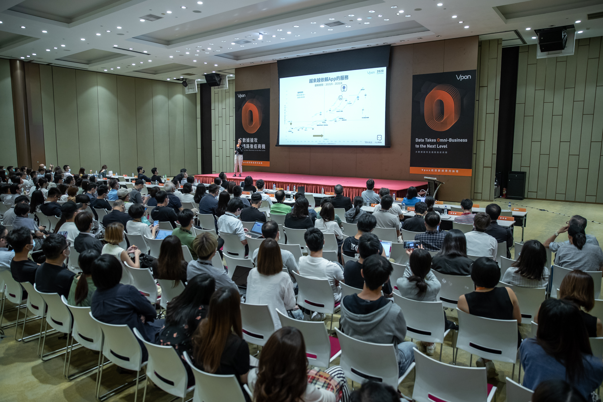
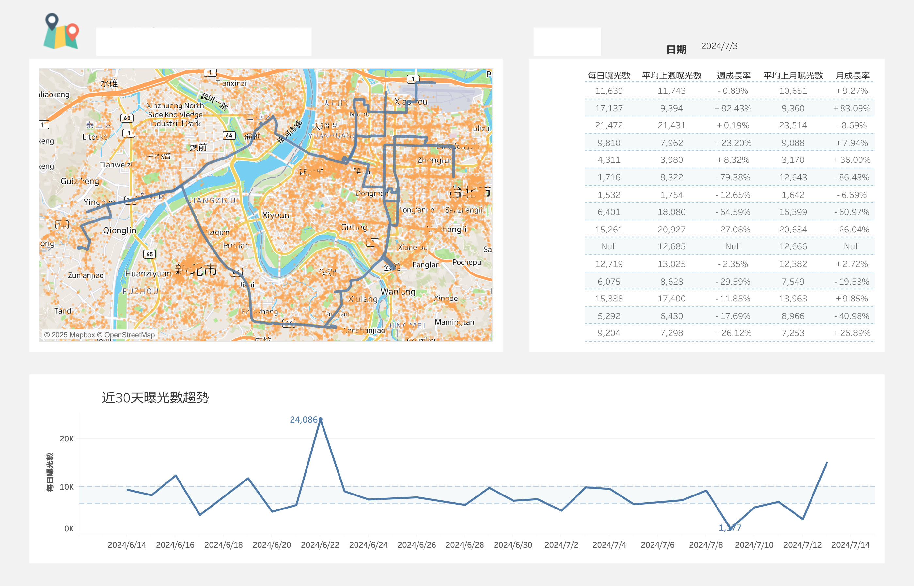

Profile
數據產品 × 商業決策
「具 9 年以上數據分析與產品化經驗，專注以數據驅動商業決策與策略落地。
善於整合客戶需求與跨部門資源，將複雜洞察轉化為可執行成果。」
核心技術棧
 Tableau
Tableau數據溝通力 (Public Speaking)

具備多場技術論壇與產業分享經驗，擅長以「敘事化」方式轉譯複雜數據，讓不同背景的利害關係人都能快速掌握核心重點。
Dashboard 與監測產品化
